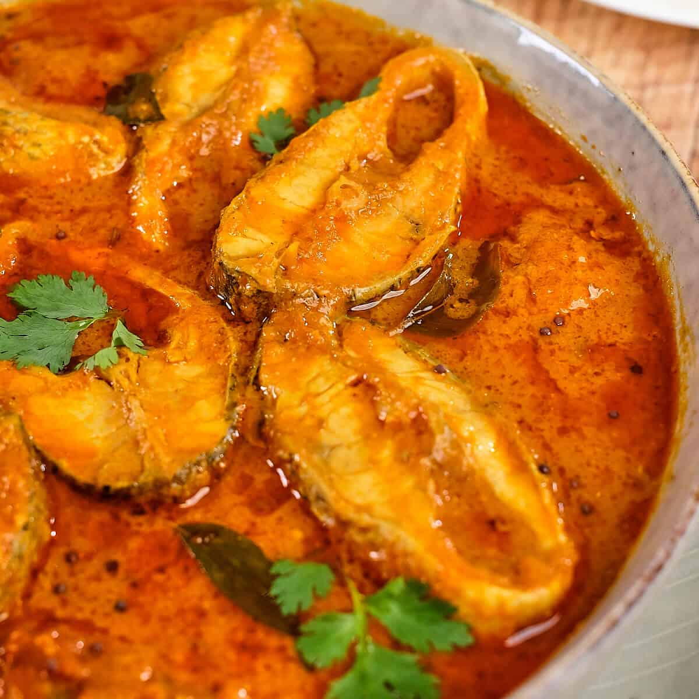

Ingredients:
1 onion, thinly sliced
1 tbsp oil or coconut oil
2 cloves garlic, chopped
Fresh ginger, approx. 1 inch, finely chopped
Preferred curry paste (e.g. PataksTikka Masala)
Quick cooking veggies e.g. mushrooms, courgettes, spinach, peas, beans
1 can coconut milk
2 fillets white fish
Half a cauliflower
1 tbsp coconut oil
1 tsp curry powder
1 lemon, grated rind only
Salt & pepper
Fresh coriander
Procedure
Heat the oil in a saucepan and fry the onion for about 10 minutes until soft
2. Add the garlic and ginger and fry for 2 minutes
3. Add a third of the jar of curry paste, cook for 2 minutes. Add 50ml of water and cook until the liquid evaporates.
4. Add the quick cooking veggies and stir
5. Add between half and a full can of coconut milk (depending how runny you like your curry), stir and bring to the boil.
6. Add the fish fillets, cover with a lid and boil gently for approx. 10 mins
7. While the fish is cooking, blitz the cauliflower in the food processor with salt, pepper, curry powder and lemon rind until chopped quite fine (like rice)
8. Fry the cauliflower-rice in the coconut oil for approx.. 8-10 mins while the fish cooks.
9. Check the fish is cooked and then enjoy with fresh coriander sprinkled on top